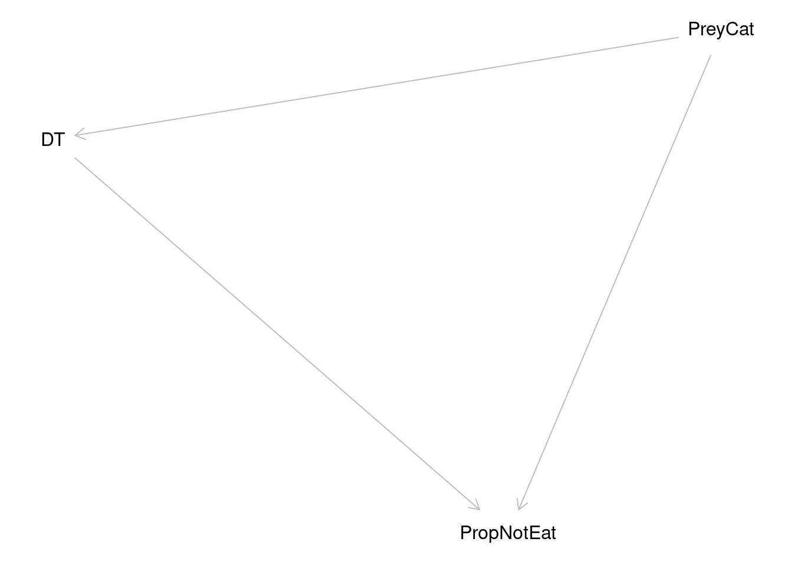
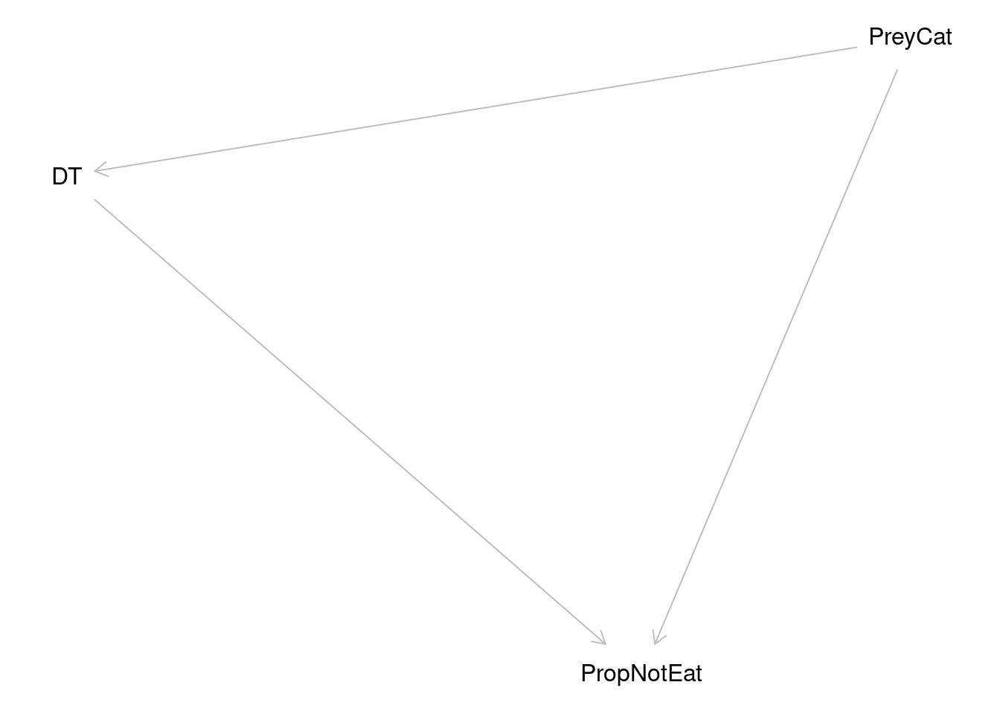
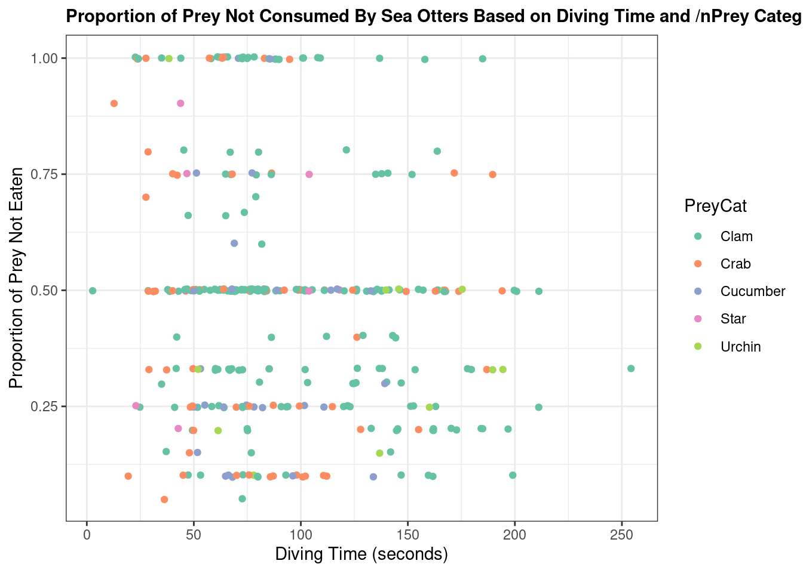
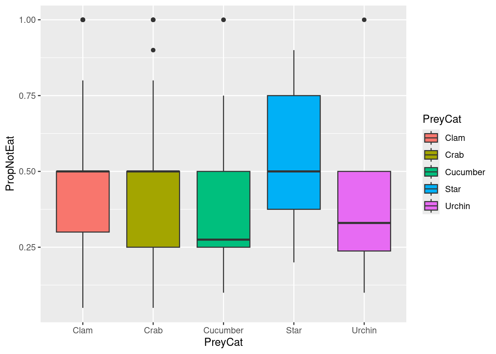
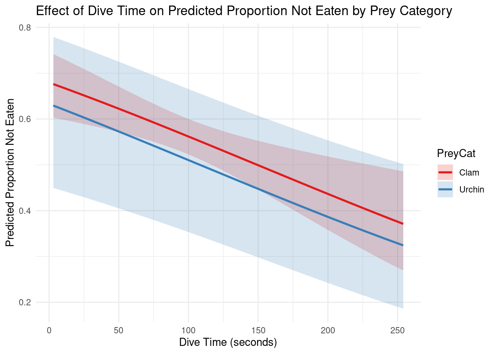

Show code
# Create a DAG using dagitty package... relate to each variable
library(dagitty)
dag <- dagitty("dag {
PreyCat -> DT
DT -> PropNotEat
PreyCat -> PropNotEat
}")
plot(dag) # Visualize DAG
Currently under construction: Some sections do not have descriptions and will be updated by this Saturday.
The sea otter (Enhydra lutris) is a highly social marine mammal that plays a vital role as a keystone species in maintaining the health of kelp forest ecosystems by controlling sea urchin populations. Although sea otters are primary predators of sea urchins, their diet is diverse and includes a wide variety of prey types. For example, sea otters in Alaska are known to consume a wide range of prey, including clams, crabs, sea urchins, sea cucumbers, and snails (LaRoche et al., 2018). In recolonized areas of Southeast Alaska, clams are strongly selected despite their relatively low abundance, reflecting their high quality value. Similarly, sea urchins dominate diets primarily in rocky reef habitats where they are more abundant (LaRoche et al., 2018).

The proportion of prey not eaten provides a measure of foraging efficiency and prey handling success, reflecting both biological constraints and behavioral choices during feeding. Because of their important role as a keystone species, understanding their diet and foraging patterns is essential for assessing feeding preferences and food availability in conservation.
This blog post aims to present and discuss the results of a statistical regression analysis conducted on sea otter foraging data collected from visual observations in Prince of Wales, Alaska, by LaRoche et al. (2018). A beta regression using glmmTMB with a zero-adjustment was selected for the analysis in order to assess the proportion of prey not consumed by sea otters during summer 2018. The following question was utilized to guide the analysis:
How does prey categorization and dive depth predict the proportion of prey not eaten?
The mean proportion not eaten was modeled using a Beta regression with a logit link, while a precision parameter (ϕ) captured the variability in proportions around the mean.
\[ \text{PropNotEaten} \sim \text{Beta}(\alpha, \beta) \]
\[ logit(\mu_i) = \beta_{0} + \beta_{diveTime} + \beta_{PreyCat\_urchin} + \beta_{PreyCat\_crab} + \beta_{PreCat\_cucumber} + \beta_{PreCat\_star} \]
Hypothesis 1:
H0: βPreyCat_urchins = 0. Sea otters leave the same proportion of urchins uneaten as they do with clams; prey category does not influence the proportion of prey eaten.
HA: βPreyCat_urchins ≠ 0. Sea otters leave a significantly different proportion of urchins uneaten compared to clams; prey category has a significant effect on the proportion of prey not eaten.
Hypothesis 2:
H0: βdive_time = 0. Dive time has no significant effect on the proportion of prey not eaten; the duration of a dive does not influence how much prey is not eaten.
HA: βdive_time ≠ 0. Dive time does significantly affect the proportion of prey not eaten; longer or shorter dives are associated with a higher or lower proportion of prey left uneaten.
The categorical variable PreyCat represents the general prey categorization of a prey type. In particular, clams and urchins differ biologically in handling difficulty and energetic return. Urchins may require more processing and include defensive structures (spines), whereas clams require shell-breaking but offer concentrated soft tissue. These differences potentially influence the proportion of prey successfully consumed, indicating a direct causal effect of prey category on the proportion of prey not consumed
Additionally, prey category may influence dive duration because hunting, handling, and extracting different prey may require different levels of effort and time. Thus, prey category potentially influences dive time, which in turn affects the proportion of prey not eaten.
# Create a DAG using dagitty package... relate to each variable
library(dagitty)
dag <- dagitty("dag {
PreyCat -> DT
DT -> PropNotEat
PreyCat -> PropNotEat
}")
plot(dag) # Visualize DAG
The data used in this project were obtained from the KNB Data Repository and are based on the finalized foraging dataset “Sea otter foraging data, visual observations from Prince of Wales, Alaska” compiled by Nicole LaRoche, Sydney King, and Heidi Pearson (2018). LaRoche et al. documented sea otter diets from May to August 2018 using visual observations conducted along the western coast of Prince of Wales Island, Alaska, at sites characterized by high otter densities. The finalized foraging dataset is publicly accessible as a CSV file through the KNB Data Repository.
The foraging dataset used in this project had been previously cleaned by the original authors. However, additional processing was required, including adjusting variables to appropriate ranges and removing missing values. Therefore, further preprocessing steps were necessary before conducting the analyses.
Here, we load the necessary packages for the analysis and then import the dataset by providing the correct file path to read_csv().
library(here)
library(tidyverse)
# https://cran.r-project.org/web/packages/betareg/vignettes/betareg.html#sec-model
library(glmmTMB)
library(broom)
library(broom.mixed) # for glmmTMB mixed model
library(kableExtra)set.seed(123)
forage <- read_csv("forage_final.csv")Missing values denoted with NA were necessary to drop. Additionally
# Drop NAs
# Select for just prey category, diving time, and age
forage <- forage %>% select(PreyCat, PropNotEat, DT)
#forage <- forage %>% filter(age != "U")
forage <- forage %>% drop_na()
#forage <- forage %>% filter(PreyCat != "PreyCatMussel", PreyCat != "PreyCatSnail")
table(forage$PreyCat)
Clam Crab Cucumber Star Urchin
205 71 28 7 12 # Check the colSums to ensure all NAs are dropped
colSums(is.na(forage)) PreyCat PropNotEat DT
0 0 0 # Create a scatterplot of dive time related to the proportion of prey not eaten based on prey category
forage %>% ggplot(aes(x = DT, y = PropNotEat))+ geom_jitter() + theme_bw() + #+ scale_color_discrete(palette = "Set2") +
# #facet_wrap(~PreyCat, scale = "free") +
#theme(legend.position = "none") +
labs(x = "Diving Time (seconds)", y = "Proportion of Prey Not Eaten",
title = "Proportion of Prey Not Consumed By Sea Otters Based on Diving Time") + theme(plot.title = element_text(size = 11, face = "bold"))
# Create boxplots to visualize the distribution of prey categories and proportion of prey not eaten
forage %>% ggplot(aes(x = PreyCat, y = PropNotEat, fill = PreyCat)) + geom_boxplot() 
# scale_fill_manual(values = c(
# "Clam" = "#1b9e77",
# "Urchin" = "#d95f02",
# "Crab" = "#7570b3",
# "Cucumber" = "#66a61e",
# "Star" = "#e6ab02"
# )) + theme_bw()Here, simulated data was generated to evaluate model performance, explore parameter recovery, and verify that the fitted model behaves as expected. As cited in the betareg CRAN project, the
# Beta does not take direct 0 and 1! need to do adjustment to offset before 1 and after 0 ()
forage <- forage %>%
mutate(PropNotEat_adj = # Transformation to adjust (betareg cranr)
(PropNotEat * (nrow(.) - 1) + 0.5) / nrow(.))# Original model
forage_beta <- glmmTMB(
PropNotEat_adj ~ DT + PreyCat,
data = forage,
family = beta_family(link = "logit")
)
# Model with interaction between PreyCat and DT
forage_interaction <- forage_org <- glmmTMB(
PropNotEat_adj ~ PreyCat * DT,
data = forage,
family = beta_family(link = "logit")
)
# Compare models (lowest AIC) (Akaike's An Information Criterion for log-link)
AIC(forage_beta, forage_interaction) df AIC
forage_beta 7 -21.95160
forage_interaction 11 -14.69916# Reset seed (redefined)
set.seed(123)
# Define simulated obs... with law of large numbers, larger sample size should get closer to actual predictors
n_sim <- 15000
# Define coefficients from original model
beta0 <- 0.738077
beta_dive_time <- -0.004949
beta_crab <- -0.265717
beta_cucumber <- -0.449131
beta_star <- -0.240470
beta_urchin <- -0.205423
phi <- 1.72 # Precision
## Simulate range for predictors
dt <- runif(n_sim, 3, 255) # Range of dive time
# Randomly generate PreyCat factors for simulated data... then for each level, sample with replacement to get vector of length n_sim
PreyCat <- sample(c("Clam","Crab","Cucumber","Star","Urchin"), n_sim, replace = TRUE)
## Define linear predictor and logit equation
# Assign coefficient to each PreyCat level
prey_effect <- ifelse(PreyCat == "Crab", beta_crab,
ifelse(PreyCat == "Cucumber", beta_cucumber,
ifelse(PreyCat == "Star", beta_star,
ifelse(PreyCat == "Urchin", beta_urchin,
0)))) # Else assign clam (reference)
glm_eq <- beta0 + beta_dive_time * dt + prey_effect # Recall that prey_effect has the associated beta coefficient for each level
# Convert linear predictor (logit scale) to mean proportion on response scale
mean_sim <- exp(glm_eq) / (1 + exp(glm_eq))
# Reparameterize beta distribution parameters (derived from CRAN at (https://search.r-project.org/CRAN/refmans/betareg/html/dbetar.html)
alpha <- mean_sim * phi
beta <- (1 - mean_sim) * phi
# Simulate response variable from beta distribution using calculated alpha and beta
PropNotEat_adj <- rbeta(n_sim, alpha, beta)
# Create simulated data frame
simulated_forage <- data.frame(
PropNotEat_adj = PropNotEat_adj,
DT = dt,
PreyCat = factor(PreyCat, levels = c("Clam","Crab","Cucumber","Star","Urchin"))
)
# Fit simulated model
sim_model <- glmmTMB(
PropNotEat_adj ~ DT + PreyCat,
data = simulated_forage,
family = beta_family(link = "logit")
)# Compare coefficients
summary(sim_model) Family: beta ( logit )
Formula: PropNotEat_adj ~ DT + PreyCat
Data: simulated_forage
AIC BIC logLik -2*log(L) df.resid
-2747.9 -2694.6 1381.0 -2761.9 14993
Dispersion parameter for beta family (): 1.71
Conditional model:
Estimate Std. Error z value Pr(>|z|)
(Intercept) 0.7406679 0.0270753 27.36 < 2e-16 ***
DT -0.0050162 0.0001319 -38.03 < 2e-16 ***
PreyCatCrab -0.2196297 0.0297231 -7.39 1.48e-13 ***
PreyCatCucumber -0.4368883 0.0297059 -14.71 < 2e-16 ***
PreyCatStar -0.2597803 0.0297271 -8.74 < 2e-16 ***
PreyCatUrchin -0.2300222 0.0296505 -7.76 8.64e-15 ***
---
Signif. codes: 0 '***' 0.001 '**' 0.01 '*' 0.05 '.' 0.1 ' ' 1summary(forage_beta) Family: beta ( logit )
Formula: PropNotEat_adj ~ DT + PreyCat
Data: forage
AIC BIC logLik -2*log(L) df.resid
-22.0 4.5 18.0 -36.0 316
Dispersion parameter for beta family (): 1.72
Conditional model:
Estimate Std. Error z value Pr(>|z|)
(Intercept) 0.751984 0.166355 4.520 6.17e-06 ***
DT -0.005037 0.001465 -3.439 0.000585 ***
PreyCatCrab -0.204459 0.160391 -1.275 0.202396
PreyCatCucumber -0.493795 0.233425 -2.115 0.034393 *
PreyCatStar -0.248133 0.447552 -0.554 0.579289
PreyCatUrchin -0.207176 0.339632 -0.610 0.541860
---
Signif. codes: 0 '***' 0.001 '**' 0.01 '*' 0.05 '.' 0.1 ' ' 1\[ \text{PropNotEaten} \sim \text{Beta}(\alpha, \beta) \]\[ logit(\mu_i) = \beta_{0} + \beta_{diveTime} + \beta_{PreyCat\_urchin} + \beta_{PreyCat\_crab} + \beta_{PreCat\_cucumber} + \beta_{PreCat\_star} \] - Model estimates are presented with appropriate uncertainty (e.g., confidence intervals)
[Extracting CIs via bootstrapping: Accompanying uncertainty estimates ]
## upper lower bounds??
## Coef CI??
## Bootstrap
ci_forage <- confint(forage_beta)
print(ci_forage) 2.5 % 97.5 % Estimate
(Intercept) 0.425935276 1.078033168 0.751984222
DT -0.007907824 -0.002166018 -0.005036921
PreyCatCrab -0.518818629 0.109901245 -0.204458692
PreyCatCucumber -0.951299409 -0.036290196 -0.493794802
PreyCatStar -1.125318392 0.629051670 -0.248133361
PreyCatUrchin -0.872842277 0.458489567 -0.207176355## Calculate with standard equation
beta1_model <- -0.004949
lwr = beta1_model - (1.96*0.001488 )
upr = beta1_model + (1.96*0.001488 )
print(paste(lwr, upr))[1] "-0.00786548 -0.00203252"## CIs are currently in logit... switch to response scale
# Build prediction grid of all combinations of DT and PreyCat
predicted_data <- expand.grid(
# Establish sequence for predictor range (DT)
DT = seq(min(forage$DT, na.rm = TRUE), max(forage$DT, na.rm = TRUE), length.out = 100),
PreyCat = levels(factor(forage$PreyCat)) # Convert to factor
)
# Ensure levels in predicted_data exactly match in forage$PreyCat
predicted_data$PreyCat <- factor(predicted_data$PreyCat, levels = levels(factor(forage$PreyCat)))# Predict on logit link scale with SEs
pred_link <- predict(
forage_beta,
newdata = predicted_data,
type = "link",
se.fit = TRUE
)
# Predict on logit link scale with standard errors
predicted_data$fit <- pred_link$fit
predicted_data$se.fit <- pred_link$se.fit
# CIs on link scale
predicted_data$lower_link <- predicted_data$fit - 1.96 * predicted_data$se.fit
predicted_data$upper_link <- predicted_data$fit + 1.96 * predicted_data$se.fit
# Revert to response scale usinng inverse logit
inv_logit <- function(x) 1 / (1 + exp(-x))
#
predicted_data$predicted_PropNotEat_adj <- inv_logit(predicted_data$fit)
predicted_data$lower <- inv_logit(predicted_data$lower_link)
predicted_data$upper <- inv_logit(predicted_data$upper_link)
# Select only categories you want to plot
predicted_ribbon <- predicted_data %>%
filter(PreyCat %in% c("Clam", "Urchin"))# Plot fitted lines per prey category
predicted_data %>%
ggplot(aes(x = DT, y = predicted_PropNotEat_adj, color = PreyCat)) +
geom_line(size = 1) +
labs(
title = "Effect of Dive Time on Predicted Proportion Not Eaten Based on Prey Category",
x = "Dive Time (seconds)",
y = "Predicted Proportion Not Eaten"
) + facet_wrap(~ PreyCat) +
theme_minimal() +
scale_color_brewer(palette = "Set1")
## Ribbon
predicted_data %>% filter(PreyCat %in% c("Clam", "Urchin")) %>%
ggplot(aes(x = DT, y = predicted_PropNotEat_adj, color = PreyCat)) +
# Ribbon for Clam and Urchin
geom_ribbon(
data = predicted_ribbon,
aes(ymin = lower, ymax = upper, fill = PreyCat),
alpha = 0.2,
color = NA
) +
# Predicted lines for all categories
geom_line(size = 1) +
labs(
title = "Effect of Dive Time on Predicted Proportion Not Eaten by Prey Category",
x = "Dive Time (seconds)",
y = "Predicted Proportion Not Eaten"
) +
theme_minimal() +
scale_color_brewer(palette = "Set1") +
scale_fill_brewer(palette = "Set1")
For future analysis, the age (adult and juvenile) of observed sea otters may be considered as a potential confounding variable impacting diving time, preference for prey, and the proportion of prey left uneaten.